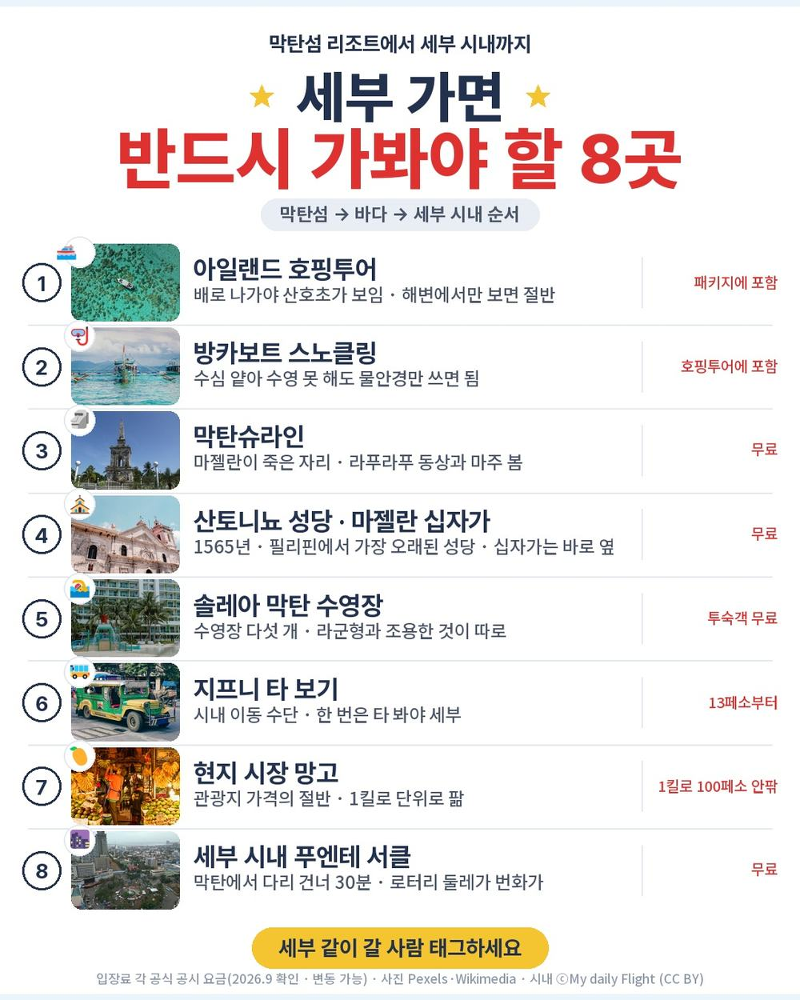
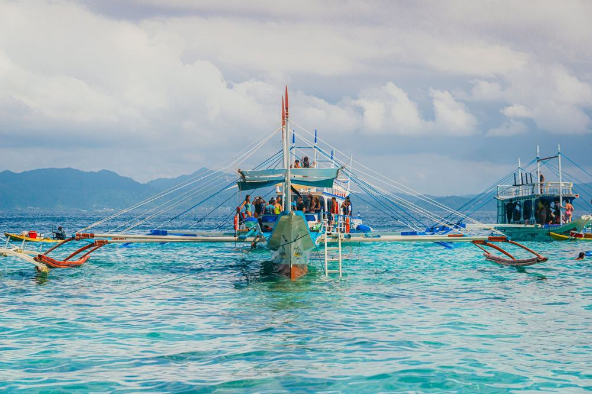
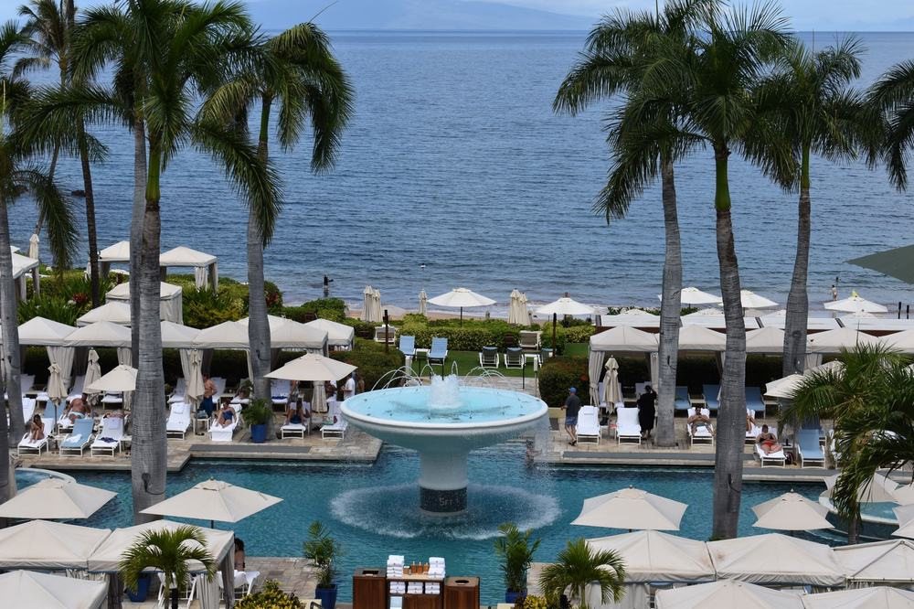
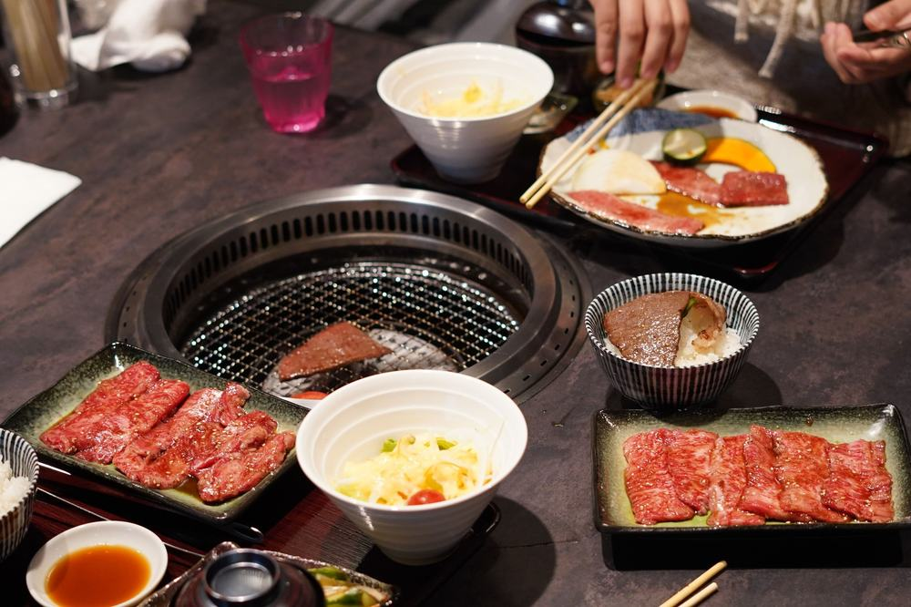
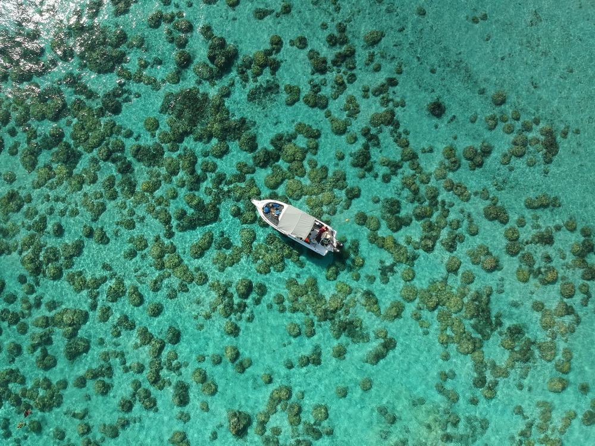
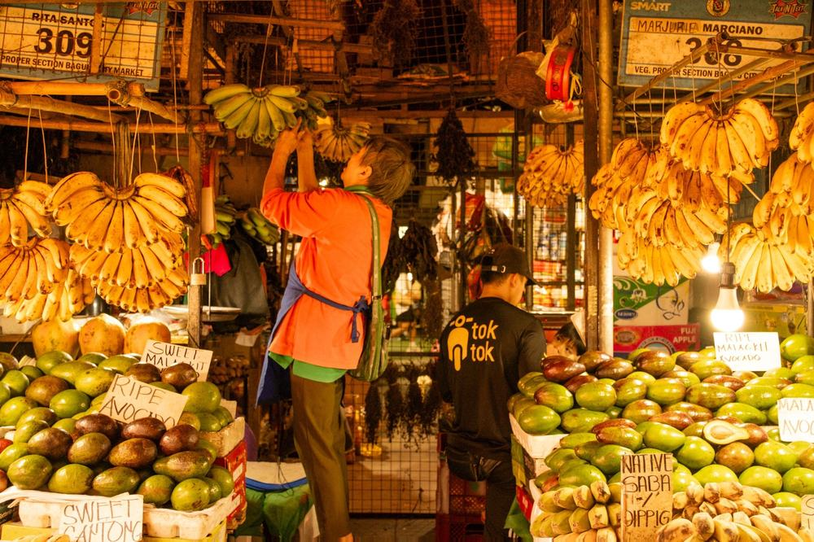
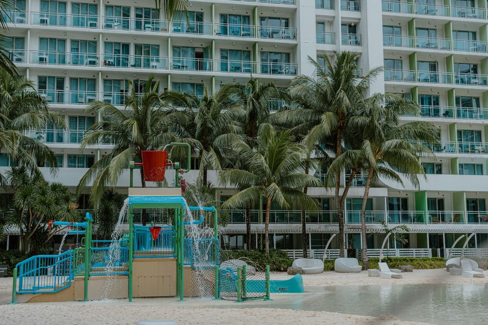
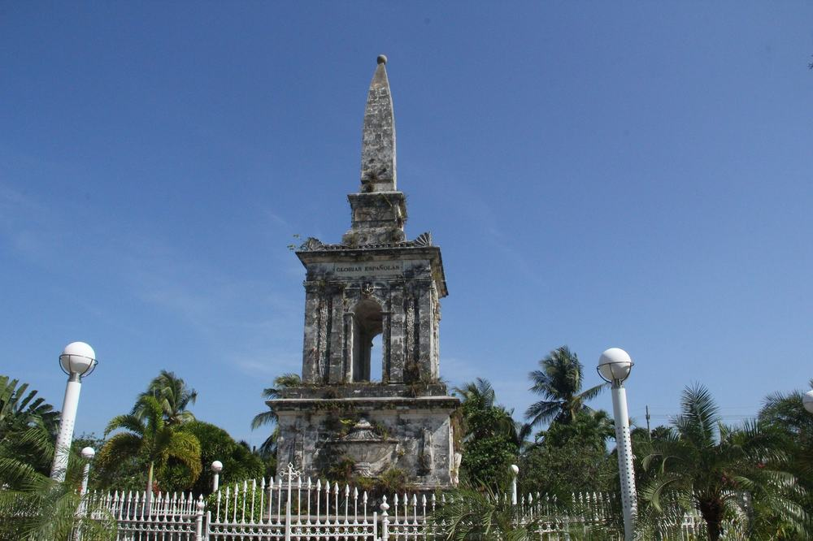
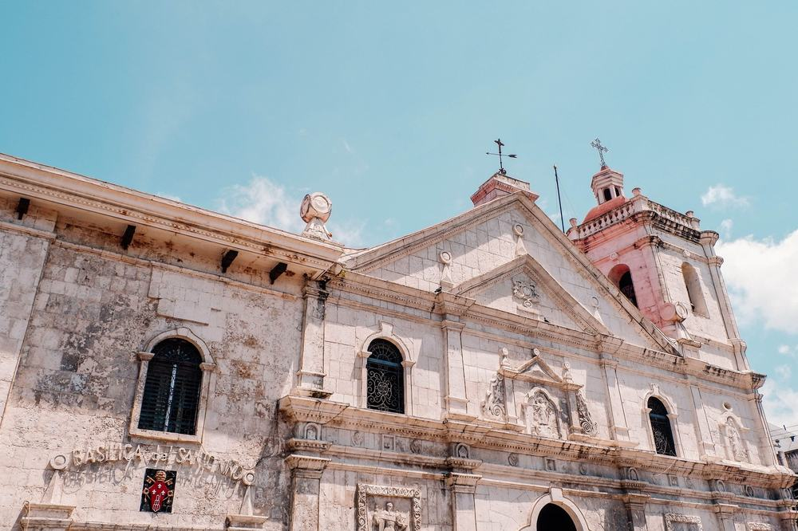

결론 — 추천. 세 밤을 한 리조트에서 자면서 쉬다 오고 싶은 분, 부산·경남에서 출발하는 분에게 맞음. 밤 비행기가 힘든 분, 수도권에서 김해까지 내려가야 하는 분, 쇼핑 들르는 것 자체가 싫은 분은 고르면 안 됨.
부모님 모시고 갈 데를 찾다가 39만 9천원짜리 세부를 붙잡았음. 이 값이면 보통 호핑투어가 빠지거나 현지에서 따로 받는데, 이건 마사지까지 들어 있다고 적혀 있었음.
그래서 정말 들어 있는지, 대신 어디서 돈이 더 나가는지 항목별로 뜯어봤음.

| 항목 | 내용 |
|---|---|
| 여행사 | 참좋은여행 |
| 가격 | 399,000원 (1인 · 성인 기준 · 10월 출발) |
| 일정 | 3박 5일 · 밤 10시 출발 |
| 항공 | 진에어 직항 (김해-막탄 세부 4시간 15분 · 간편 기내식) |
| 숙소 | 솔레아 막탄 리조트 3박 (2인 1실 · 호텔 이동 없음) |
| 가는 곳 | 아일랜드 호핑투어 · 세부 디스커버리 투어 · 막탄슈라인 · 막탄 성당 · 산토니뇨 성당 |
| 반드시 더 내는 돈 | 가이드·기사 경비 50달러 (현지 지불) |
결론부터 말하면 같은 일정을 직접 짜면 40만원 넘게 더 듦. 호핑투어·마사지·리조트 디너를 현지에서 따로 사면 그것만 1인 125달러인데, 이 셋이 상품가 안에 있음.
| 순서 | 다루는 것 | 한 줄 결론 |
|---|---|---|
| 1 | 구성 뜯어보기 | 특전 125달러어치 포함 · 현지 필수는 50달러 하나 · 쇼핑 3회 |
| 2 | 일정 살펴보기 | 첫날은 이동만, 둘째 날 시장·마사지, 셋째 날 호핑투어 |
| 3 | 자유여행 VS 패키지 | 직접 짜면 90만원, 패키지는 경비까지 50만원 |
요약 — 항공·리조트 3박·식사 7회·관광 5회·호핑투어·전신마사지 60분·리조트 디너·최고 1억원 보험까지 39만 9천원. 현지에서 반드시 내는 건 가이드·기사 경비 50달러 하나. 다만 3·4일차 저녁이 불포함이고 쇼핑이 3회 있음.
1인 39만 9천원임. 3박 5일 기준임.
| 항목 | 상태 |
|---|---|
| 왕복 항공권 | 포함 (진에어 직항 · 제세공과금·유류할증료 포함) |
| 현지 공항세 850페소 | 포함 |
| 솔레아 막탄 리조트 3박 | 포함 (2인 1실 · 호텔 이동 없음) |
| 식사 7회 | 포함 (리조트 조식 3 · 현지식 · 한식 · 씨푸드 BBQ · 리조트 디너) |
| 아일랜드 호핑투어 | 포함 (방카 · 스노클링 · 줄낚시 · 야외 씨푸드 중식 · 80달러 상당) |
| 전신마사지 60분 | 포함 (30달러 상당 · 성인만 · 아동 제외) |
| 리조트 디너 1회 | 포함 (15달러 상당) |
| 라군 워터파크 1일 | 포함 (10달러 상당) |
| 관광 5회 입장 | 포함 (디스커버리 투어 · 막탄슈라인 · 산토니뇨 성당 등) |
| 현지 한국어 가이드 | 포함 (미팅은 막탄 세부 공항 밖에서) |
| 최고 1억원 여행자보험 | 포함 |
| 수하물 | 15kg → 20kg 업그레이드 |
| 가이드·기사 경비 50달러 | 불포함 (현지 지불 · 성인·아동 동일) |
| 3일차 저녁 · 4일차 저녁 | 불포함 (자유식) |
| 인솔자 | 불포함 (한국 출발부터 동행하는 인솔자는 없음) |
| 쇼핑 | 3회 (보석 · 라텍스 · 토산품 · 회당 50분~1시간) |
| 선택관광 | 메뉴 있음 (체험다이빙 120달러 등 · 구매는 자유) |
필리핀 패키지는 가이드·기사 경비를 현지에서 걷는 게 보통이고 이 상품도 그럼. 50달러면 우리 돈 7만원 안팎임.
상품가에 이걸 더해서 1인 46만 9천원으로 보면 됨.
| 항목 | 금액 | 비고 |
|---|---|---|
| 가이드·기사 경비 | 50달러 (약 7만원) | 필수 · 현지 지불 · 성인·아동 동일 |
| 3일차 저녁 | 약 1만 5천원 | 리조트 식당 또는 인근 식당 |
| 4일차 저녁 | 약 1만 5천원 | 공항 가기 전 자유식 |
| 선택관광 | 0 ~ 17만원 | 안 하면 0 (체험다이빙 120달러 · 어메이징쇼 65달러 등) |
| 리조트 써차지 | 30~50달러 | 특정 기간만 · 룸당·박당 · 예약 시 확인 |
| 호텔 데포짓 | 최대 300달러 | 체크아웃 시 환불 (카드는 2~3주 소요) |
| 합계 (필수만) | 약 7만원 | 저녁 두 끼까지 넣으면 약 10만원 |

상품 핵심포인트 칸에 금액이 그대로 적힌 특전이 셋 있음. 호핑투어 80달러, 전신마사지 30달러, 리조트 디너 15달러임.
이게 왜 중요하냐면, 같은 상품 선택관광표에 비슷한 항목의 현지 판매가가 그대로 적혀 있기 때문임. 전신마사지가 선택관광에는 50달러로 적혀 있음.
합치면 1인 125달러, 우리 돈 17만원쯤임. 39만 9천원짜리 상품에서 17만원어치가 이미 값 안에 있는 셈임.
여기에 라군 워터파크 1일 이용 10달러와 객실당 망고 1kg까지 붙음.
어디서 확인하나 — 상품 페이지 「핵심포인트」에서 금액이 적힌 특전을 찾음. 거기 적힌 이름과 「선택관광」 표에 적힌 이름을 대조하면, 포함인지 현지 판매인지가 갈림. 같은 이름이 양쪽에 있으면 포함이 맞음.

식사는 7회임. 1일차 기내식, 2일차 리조트 조식·현지식 점심·리조트 디너. 3일차 조식·씨푸드 BBQ 점심. 4일차 조식·한식 점심. 5일차 기내식임.
빠지는 건 3일차 저녁과 4일차 저녁임. 3일차는 리조트에 있는 날이라 안에서 사 먹으면 되고, 4일차는 공항 가기 전임.
한식이 한 번 있는 것도 봐둘 만함. 3박 5일 동남아 상품에서 한식 한 끼는 부모님 모시고 갈 때 체감이 큼.
어디서 확인하나 — 일정표 각 날 식사 칸에서 '없음' 글자를 셈. 이 상품은 3·4일차 석식 두 곳임. 불포함사항 칸에도 똑같이 적혀 있으니 두 곳을 대조하면 확실함.

이 상품에서 제일 먼저 짚어야 할 건 쇼핑 3회임. 보석샵, 라텍스샵, 토산품샵이고 회당 50분에서 1시간임.
3박 5일에 세 번이면 적은 편은 아님. 다만 사는 건 자유임. 값이 39만 9천원까지 내려온 데는 이 구조가 있음.
어디서 확인하나 — 상품 페이지 「쇼핑」 칸에서 횟수와 판매점 종류, 소요 시간을 봄. '환불' 표시가 있는지도 같이 봄. 이 상품은 환불 불가로 적혀 있음.
출발일별 요금 확인하기
https://naver.me/G8f3L02l
1절 자주 나오는 질문
Q. 쇼핑 없나요?
A. 3회 있음. 보석·라텍스·토산품, 회당 50분~1시간. 구매는 자유임
Q. 가이드 경비는 따로 내나요?
A. 냄. 1인 50달러를 현지에서 지불함. 상품가 밖임
Q. 출발확정인가요?
A. 아님. 최소 2명이 모여야 출발함. 예약 후 담당자 확인에서 물어보면 됨
요약 — 1일차는 밤 비행기로 이동만. 2일차 시장·마사지, 3일차 호핑투어 4시간, 4일차 시내 보고 새벽 비행기. 리조트를 한 번도 안 옮기고 걷는 구간이 거의 없음.
| 일차 | 가는 곳 | 식사 | 숙소 |
|---|---|---|---|
| DAY 1 | 김해 22:00 출발 → 막탄 세부 01:20 도착 · 가이드 미팅 · 리조트 | 기내식 | 솔레아 막탄 |
| DAY 2 | 다이빙 무료강습 · 세부 디스커버리 투어 · 전신마사지 60분 | 조식 · 현지식 · 리조트 디너 | 솔레아 막탄 |
| DAY 3 | 아일랜드 호핑투어 4시간 · 리조트 자유시간 | 조식 · 씨푸드 BBQ · 석식 불포함 | 솔레아 막탄 |
| DAY 4 | 체크아웃 · 막탄슈라인 · 막탄 성당 · 산토니뇨 성당 · 쇼핑 3회 | 조식 · 한식 · 석식 불포함 | — |
| DAY 5 | 막탄 세부 02:15 출발 → 김해 07:25 도착 | 기내식 | — |

밤 10시에 김해에서 떠서 자정 넘은 새벽 1시 20분에 막탄 세부에 내림. 리조트에 들어가면 새벽 2시쯤임.
여기서 하나 알고 가야 함. 필리핀은 법으로 가이드가 공항 안까지 못 들어옴. 입국 심사와 짐 찾기는 각자 하고, 공항 밖으로 나오면 참좋은여행 피켓을 든 가이드가 서 있음.
그래서 eTravel 등록을 미리 해둬야 함. 출발 72시간 안에 등록하고 QR 코드를 저장해 가면 입국이 빨라짐.
오전에 수영장에서 다이빙 무료 강습을 함. 이론부터 하니 처음이어도 됨. 바닷속 체험은 별도 선택관광 120달러임.
낮에는 디스커버리 투어임. 세부 재래시장과 과일가게를 둘러봄. 안내에는 5~10분으로 적혀 있어서 길게 보는 코스는 아님.
오후가 전신마사지 60분임. 저녁은 리조트 디너고, 그 뒤로는 리조트에서 쉬면 됨.
어디서 확인하나 — 일정표에서 마사지 앞에 붙은 시간과 '(성인만 해당 / 아동제외)' 문구를 봄. 아이를 데려가면 아이 몫은 없음. 시간도 60분인지 30분인지 상품마다 갈림.

리조트 조식 후 방카를 타고 바다로 나감. 약 4시간 코스임. 구명조끼를 입고 가이드가 같이 탐.
스노클링으로 열대어에게 먹이를 주고, 줄낚시도 함. 점심은 섬에서 씨푸드 바비큐임.
안내에 호핑투어는 2일째 또는 3일째 중에 진행된다고 적혀 있음. 날씨와 현지 사정에 따라 날이 바뀔 수 있다는 뜻임.
오후는 리조트 자유시간임. 수영장 다섯 개와 루프탑 바, 스파가 있고 카약이나 서프보드를 30분 무료로 탈 수 있음.

오전에 체크아웃하고 막탄슈라인으로 감. 1521년 마젤란이 여기서 죽었고, 그를 물리친 라푸라푸 동상이 서 있음. 평지 공원이라 걷기 부담이 없음.
산토니뇨 성당은 1565년에 세운 필리핀에서 가장 오래된 성당임. 성당 안에 필리핀에서 제일 오래된 종교 유물이 있음.
여기서 알고 가야 할 게 있음. 체크아웃이 오전이고 비행기는 다음 날 새벽 2시 15분임. 그 사이에 객실이 없음. 쇼핑센터와 식당에서 시간을 보내게 됨.
이동은 지프니 등 현지 차량임. 전용 대형버스가 아니라 필리핀 주 교통수단으로 다닌다고 안내에 적혀 있음.

2절 자주 나오는 질문
Q. 많이 걷나요?
A. 거의 안 걸음. 4일차 공원·성당이 전부고 계단이나 언덕이 없음
Q. 10월 세부는 어떤가요?
A. 낮 31도 안팎으로 덥고 스콜이 짧게 지나감. 얇은 옷과 가디건 한 장이면 됨
Q. 비자 필요한가요?
A. 불필요. 21일 이내 무비자. 다만 eTravel 등록을 출발 72시간 전부터 해야 함
요약 — 같은 일정을 직접 짜면 1인 90만원쯤 나오고, 패키지는 가이드 경비와 빠진 저녁을 더해 50만원임. 패키지가 40만원쯤 쌈. 호핑투어·마사지·리조트 디너 세 가지만 현지에서 사도 125달러이기 때문임.
같은 일정을 직접 짜면 얼마인지 계산해봤음. 패키지에 들어 있는데 자유여행이면 따로 내야 하는 돈까지 전부 넣었음. 환율은 1달러 = 1,400원으로 잡았음. 대부분 추정치라 근거 열에 적어 뒀음.
| 항목 | 자유여행 | 패키지 | 근거 |
|---|---|---|---|
| 왕복 항공 | 약 32만원 | 포함 | 김해-세부 LCC 10월 야간편 왕복 28~38만원대 (항공권 비교 사이트 월별 조회 · 추정) |
| 리조트 3박 | 약 19만 5천원 | 포함 | 막탄 준특급 2인 1실 1박 13만원 ÷ 2 × 3박 (추정) |
| 아일랜드 호핑투어 | 약 11만 2천원 | 포함 | 같은 상품 특전 표기 80달러 기준 |
| 전신마사지 60분 | 약 7만원 | 포함 | 같은 상품 선택관광표 전신마사지 50달러 기준 |
| 리조트 디너 1회 | 약 2만 1천원 | 포함 | 같은 상품 특전 표기 15달러 기준 |
| 라군 워터파크 1일 | 약 1만 4천원 | 포함 | 같은 상품 특전 표기 10달러 기준 |
| 식사 6끼 | 약 7만 5천원 | 포함 | 리조트 조식 3회 + 현지식·한식·특별식 3끼 (디너 제외 · 추정) |
| 시내 관광 차량 | 약 5만원 | 포함 | 막탄슈라인·산토니뇨 반일 차량 2인 분할 (추정) |
| 공항 ↔ 리조트 | 약 3만원 | 포함 | 막탄 공항-리조트 심야 왕복 차량 2인 분할 (추정) |
| 여행자보험 | 약 1만 5천원 | 포함 (최고 1억원) | 3박 5일 기준 |
| 가이드·인솔자 | 없음 | 현지 한국어 가이드 전 일정 (경비 50달러 현지) | 양쪽 다 50달러 기준으로 봄 |
| 합계 | 약 90만원 | 39만 9천원 + 가이드 경비 7만원 + 저녁 2끼 3만원 = 약 50만원 | 쇼핑 제외 |
숫자만 보면 패키지가 40만원쯤 쌈. 호핑투어·마사지·리조트 디너가 자유여행으로는 큰 항목이고, 그걸 상품가 안에 넣은 것임.
물론 호핑투어와 마사지를 빼면 자유여행도 70만원대로 내려감. 다만 그러면 같은 여행이 아님. 세부에 가서 바다에 안 나가면 남는 게 리조트뿐임.

그리고 표에 못 넣은 게 있음. 심야 도착임. 새벽 1시 넘어 내려서 처음 가는 도시에서 차를 잡아 리조트까지 가는 일이, 부모님만 보내드릴 때는 생각보다 큼.
어디서 확인하나 — 자유여행으로 갈 거면 호핑투어 현지가와 막탄 공항 심야 픽업비를 먼저 봄. 이 둘이 예산에서 제일 크게 갈림. 패키지에서는 「핵심포인트」에 호핑투어가 있는지만 보면 됨.
| 자유여행이 맞는 사람 | 패키지가 맞는 사람 |
|---|---|
| 리조트에서 종일 쉬기만 할 것임 | 호핑투어·시내·마사지를 한 번에 다 볼 것임 |
| 그랩 부르고 흥정하는 게 재미있음 | 이동은 맡기고 앉아만 있고 싶음 |
| 쇼핑 들르는 게 싫음 | 쇼핑 3회는 감수하고 값을 아낄 것임 |
| 세부를 두 번 이상 가봤음 | 부모님을 보내드림 |
3절 자주 나오는 질문
Q. 환전은 얼마나 하나요?
A. 가이드 경비 50달러는 달러로 준비함. 개인 비용은 페소로 5~10만원어치 바꿔 가면 됨
Q. 혼자 가면 얼마 붙나요?
A. 상품 페이지에 싱글룸 사용료가 따로 적혀 있지 않음. 예약 전화에서 확인해야 함
Q. 아이 요금은요?
A. 소아 399,000원, 유아 100,000원임. 가이드 경비는 아동도 50달러고, 마사지는 아동 제외임
39만 9천원에 진에어 직항, 솔레아 막탄 리조트 3박, 식사 7회, 관광 5회, 그리고 아일랜드 호핑투어·전신마사지 60분·리조트 디너까지 들어 있음.
현지에서 반드시 내는 건 가이드·기사 경비 50달러 하나임. 3·4일차 저녁 두 끼를 더해도 1인 10만원 안쪽임.
같은 일정을 직접 짜면 90만원이 나와서 패키지가 40만원쯤 쌈. 값보다 더 큰 건 리조트를 한 번도 안 옮긴다는 것임. 3박을 한 곳에서 자니 짐을 한 번만 풂.
걸리는 건 밤 비행기, 김해 출발, 쇼핑 3회, 4일차 체크아웃 후 대기 이 넷임. 전부 상품 흠이 아니라 맞는 사람을 가르는 조건임. 밤 비행이 힘들면 낮 출발 상품을 보면 되고, 값을 아끼면서 호핑투어까지 하는 게 목적이면 이 구성이 맞음.
출발일별 요금 확인하기
https://naver.me/G8f3L02l
같은 기준으로 세부 패키지 고르는 법만 따로 정리한 글도 있음 — https://blog.naver.com/robotnady10/224422303640
하나투어 다낭 패키지 여행 32만원, 바나힐 골든브릿지까지 포함인 이유
https://blog.naver.com/robotnady10/224421530435
노랑풍선 후쿠오카 99만원, 힐튼에 온천 호텔 두 밤, 대게 무한리필까지 되는 이유
https://blog.naver.com/robotnady10/224418265439
이 글에는 제휴 링크가 포함되어 있으며, 링크를 통해 예약 시 일정 수수료를 받습니다. 가격은 동일합니다. 이 글은 10월 출발 기준이며, 출발일에 따라 가격이 달라집니다.